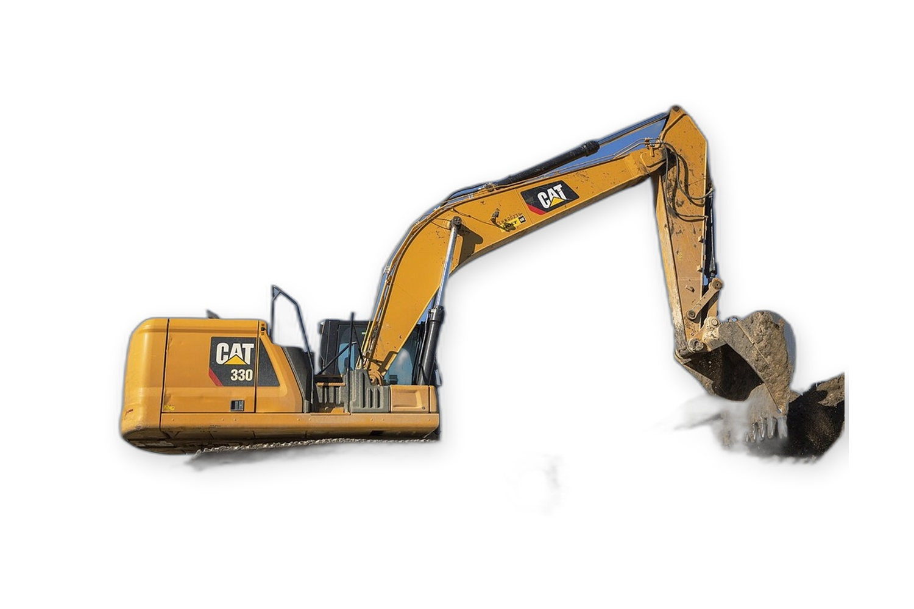
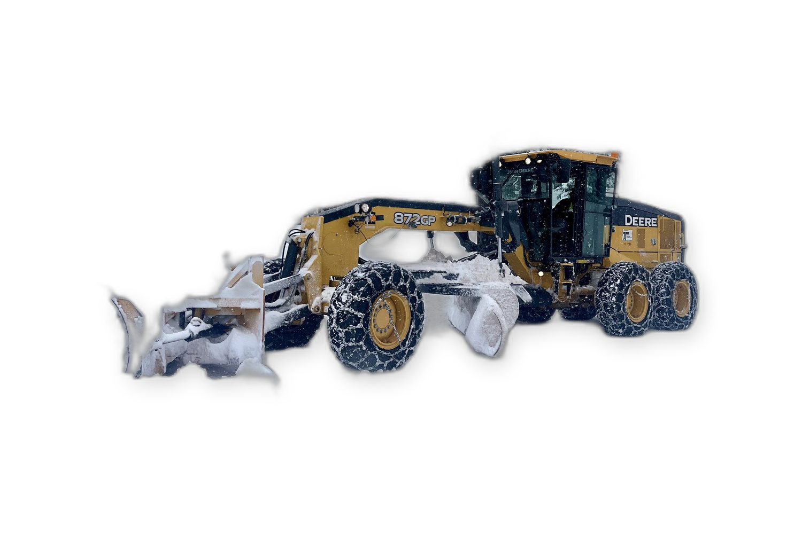
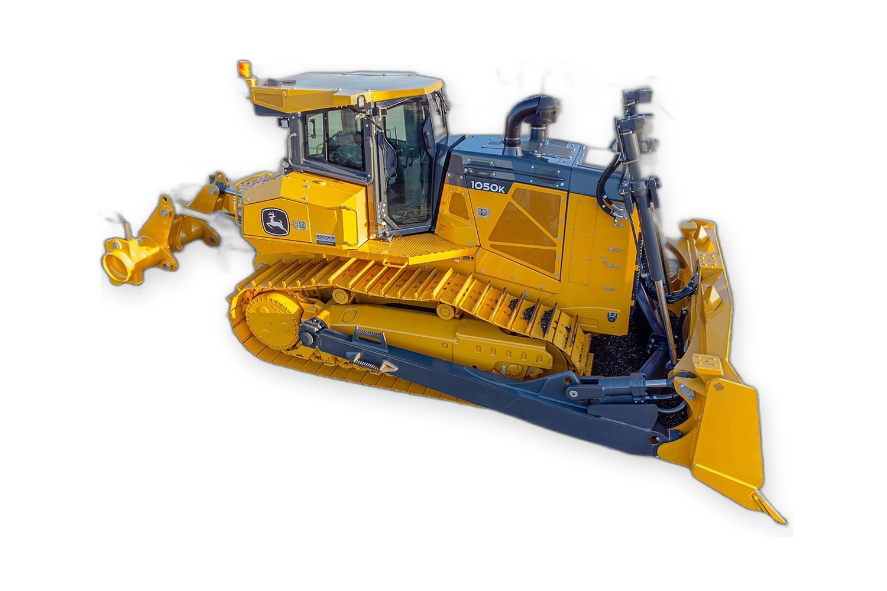

MOVIMIENTO DE SUELO
EXCAVACIÓN · PERFILADO · EMPUJE
01
EXCAVADORAS

| MODELO | POTENCIA | PESO / PBT | TRACCIÓN | CAPACIDAD / DATOS RELEVANTES |
|---|---|---|---|---|
| Doosan DX 350 LC | 271 | 35.200 | Orugas | Balde ref. 1,53 m³ (rango 1,30-1,83 m³) · Prof. exc. 6,93 m; alcance 10,38 m; boom 6,50 m / brazo 2,60 m |
| Hyunday 330 LC-9S | 263 HP bruta (neta no… | 32.700 kg | Orugas / LC | Balde 1,38-1,44 m³ · Prof. exc. máx. 7,37 m; alcance exc. máx. 11,16 m; altura descarga máx. 7,09 m; fuerza balde… |
| komatsu PC 200 LC | 131 | 22.390 | Orugas | Balde 1,20 m³; ancho 1.350 mm · Prof. exc. 6,66 m; pluma 5,70 m; brazo 2,90 m |
| Hyindai 220 LC-9S | 150 HP (112 kW) | 21.900 | Orugas / LC; zapata 600 mm | Balde 0,92 m³; ancho 1,27 m · Transp. 9,53×2,80×3,00 m; prof. exc. 6,73 m; alcance 9,82 m |
| Doosan DX 225 LC | 148 | 21.500 | Orugas | Balde ref. 0,99 m³ (rango 0,54-1,30 m³) · Prof. exc. 6,11 m; alcance 9,30 m; boom 5,70 m / brazo 2,40 m |
| Jonh Deere 160G LC | 122 | 18.017 kg | Orugas | Cucharón 0,60 m³ · Prof. exc. máx. 6,46 m; alcance a nivel suelo 9,68 m; altura descarga 6,81 m |
| Accesorios de Excavadora: Martillo hidraulico de demolision para alguno de los modelos | No aplica (accesorio… | Peso según modelo de martillo: no… | No aplica (se monta en excavadora) | Accesorio: martillo hidráulico según compatibilidad de excavadora · Caudal/presión/frecuencia dependen del… |
MOTONIVELADORAS

| MODELO | POTENCIA | PESO / PBT | TRACCIÓN | CAPACIDAD / DATOS RELEVANTES |
|---|---|---|---|---|
| Cat 140k | 180 | 14.768 | Transmisión powershift; tracción… | Cuchilla 4,26×0,61×0,02 m · Largo 10,00 m; alto 3,35 m; ancho 2,48 m |
| John Deere 670 G | 195 | 15.970 | Transmisión powershift; tracción… | Cuchilla 4,26×0,61×0,02 m · Largo 10,59 m; alto 3,40 m; ancho 2,64 m |
| Volvo G940 | 225 | 16.397 | Tándem trasero; AWD no disponible… | Moldboard 3,66 m × 0,64 m × 0,02 m · Largo 9,14 m; ancho 2,51 m; alto cabina 3,23 m |
| Liugong 4215D | 217 | 18.000 | Tándem trasero; AWD no disponible… | Cuchilla 4.270 mm; tiro barra 93 kN · Largo 9,09 m |
| SDLG G9190 F | 196 | 15.800 | Tándem trasero; AWD no disponible… | Cuchilla 3.966×635×22 mm; corte máx. 787 mm · Largo transp. 8,98 m |
TOPADORAS

| MODELO | POTENCIA | PESO / PBT | TRACCIÓN | CAPACIDAD / DATOS RELEVANTES |
|---|---|---|---|---|
| Cat D8 T | 310 | 39.800 | Orugas | Hoja 11,70 m³ · Largo 7,87 m; alto 2,70 m; ancho 3,59 m |
| Komatsu D65 | 190 | 18.600 | Orugas | Hoja 5,61 m³ · Largo 4,37 m; alto 2,97 m; ancho 3,19 m |